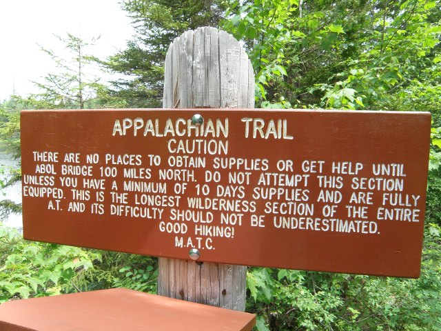
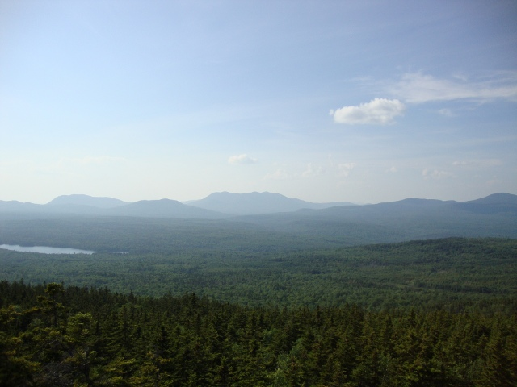
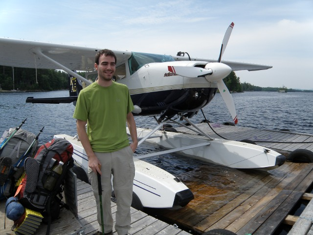
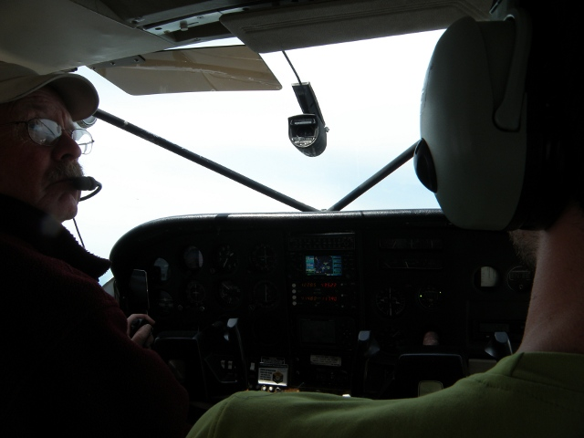
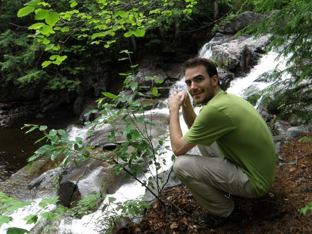
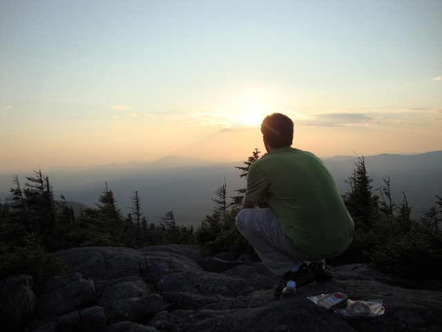

Trip report #4: Afterward and Final Thoughts
[Category: 100 Mile Wilderness] [link] [Date: 2010-08-08 23:06:53]
More than a month has passed since I completed my hike of the 100 mile wilderness section of the Appalachian Trail (AT) in Maine. I intentionally delayed the writing of this final report to allow myself extra time to more fully appreciate the experience I had and to contemplate both the positive and negative highlights of the trip. The most pressing question I have experienced from interested parties has been one of curiosity about whether or not I intend to pursue another trip of the same magnitude or challenge. At the moment, the answer is that I do not. While it is unlikely that I will never feel the urge to wander off into the woods and leave behind the stresses that linger around everyday life again, it must be recognized that trips of such lengths require immense planning and the investment of considerable amounts of money and time. One of the most difficult aspects of the 100 mile wilderness was resupplying (more accurately, the complete lack of) and I do not intend to ever carry eight to ten days of food again.

The first sign you see when entering the wilderness (Photo by Zach)While the hike was a mixed bag of experiences, at the core of it was a 100 mile stretch of difficult terrain that separated two ends of a largely unpopulated area that is the most forested region of the eastern United States. This distance turned out to be about 30 miles and three days beyond my comfort zone. In todays world of hyper-civilized suburban bliss it is difficult to imagine eight days that lack some simple material objects that are often taken for granted. Detach yourself from the comfort of your current condition for a brief moment in time. Remove the roof above your head, the climate controlled temperature around you, the chair you are sitting on, and the clean clothes on your back. Instead of waking up to the sound of an alarm clock that signals the beginning of the morning commute, you arise each day when your body summons you to begin walking for no other purpose than to move from one place to another. The end of each day yields no soft cotton sheets draped over a cushioned mattress, no faucet from which to obtain seemingly infinite quantities of water, and no fridge or pantry stocked with a cornucopia of nourishing foods. After all of the struggle of the day, you cannot reward yourself by collapsing onto a lavishly upholstered sofa and submitting to mindless television programs displayed on a gratuitously large high definition flat panel. Most integral to the experience is to imagine that every step taken forward must be completed, at some point, with the added weight of whatever items you deemed impossible to leave behind.

Typical view from atop peaks along the AT in MaineLet us switch gears for a moment. The hike was difficult. Without doubt, it tested me and, in the end, this was my intention. I can't possibly convey how such a simple object as a chair, a cotton sheet, or a favorite drink or food can come to mean to someone who is deprived of them for any measurable length of time. Part of the experience was the difficulty and the hardship and I wouldn't have it any other way. Having the comforts and safety of civilization stripped away forces a re-examination of what is truly necessary and important. What if everything that you owned had to be carried everywhere you ever went? It's a heavy question - at least in terms of its philosophical implications and the weight of such items as your car, wardrobe, and CD collection. If attachment truly is pain, then being deeply inseparable from your material possessions would be nothing short of suicide.

I manage to close my eyes for a majority of photographs (Photo by Zach)Assessing my gear choices was a relatively simple process. If I didn't use it through the whole hike it was entirely useless. If I used it less than three times the whole trip it was expendable. If I was annoyed with it, it should be replaced or changed. My choice to not purchase a new backpack led me to use a much older backpack that I was more comfortable with but it came with the expense of being slightly heavier than the alternatives. I was proud of my initial weigh out of approximately 37lbs, but it was still about 17lbs beyond what I think I really need to aim for if I desire any degree of comfort while on an extended hike. The MSR Hubba HP tent was a phenomenal performer, withstood adverse conditions, and was adaptable for a variety of situations. Despite this versatility, the realization that shelter hopping is the most viable option on most long distance trails has led me to consider an ultra-lightweight tarp as an emergency shelter rather than carrying around two pounds of tent that gets used so seldomly for its intended purpose. My decision to acquire Zach's extra hiking pole for the hike proved to be a wise one. I no longer can imagine doing any serious hiking without a good trekking pole and I will, without doubt, be investing in some lightweight trekking poles. The only item that I am still torn on is the MSR SweetWater purification system. I absolutely love the fact that I can get clean water that is both filtered and treated from nearly any water source but the field maintenance on this item was excessive and it required constant attention. Choosing to use tablet purification could potentially save another 16oz of weight at the expense of guaranteed clean water.
On numerous occasions I have been asked how much I spent on this adventure. The answer is hard to pinpoint with any kind of considerable precision since a majority of the investment was done over an extended period of time. I will say that I made a fair contribution to the rural economy of northwestern Maine. It became clear to me that there are people who make their livelihoods off of the hikers that stagger off the trail to find refuge in the rural towns of Millinocket and Monson. Don't be fooled, though. The largest industry in this region of Maine is logging. It dwarfs any other activities in the region in terms of its importance to the economy. Trees are a resource and they can be managed wisely, but it still hurts at some kind of primitive level to see truck after truck exiting the forest with loads of timber. The particular region of Maine that I was hiking through has been logged nearly completely over three times and vast tracts have been devastated by wildfires in certain areas. To my surprise, there was no evidence of tension over the activities of the loggers and the willingness of many logging companies to sell land to the MATC to form a protected corridor around the trail is heartening. Throughout the 1950's and 1960's the trail in Maine winded through the forest and passed numerous wilderness camps that were owned and operated by logging companies. AT hikers were allowed to use them for decades before the wilderness camps slowly began to disappear and fall into disrepair. White House Landing is simply a remnant of what once was a continuous network of camps along the trail.

Jim, our pilot, along with a view inside the small cockpit of the float plane (Photo by Zach)Go anywhere in the country and you are bound to find a town, city, hamlet, or region that claims to define what hospitality truly means. Lore had indicated to me that many hikers found the residents of rural Maine to be of the most exceptional quality when it comes to being hospitable and kind. At first examination I assigned this claim to the fact that the weary hiker, having slogged thousands of miles from Georgia to Monson, would have a decidedly altered view of the world and the people who occupy it. Anyone willing to help them, provide them with a place to sleep, or cook them up a hearty breakfast would be no less than an angel in their eyes. To my surprise, the legends were beyond true. I encountered no people who were anything short of courteous and all of the places I stayed provided exceptional service. The true nature of how kind the residents of rural Maine are to strangers is evident in their actions which go above and beyond the call. Zach, after getting sick, was taken out by fishermen that we had just met moments prior to asking them for assistance. He was driven back to Monson where he stayed indoors (Dawn at Shaw's refused to let him stay outside since he was sick), and was even invited to be the grill master at a cookout. Everyone I met from Monson to Millinocket was helpful and it was only younger teenagers who seemed to glare at hikers with a certain sense of judgment evident in their facial expressions.
Preparing physically for the hike was a task in itself. Early on I resolved to push aside the complacency of believing that I would simply make my way through it with brute force. For a twenty-something year old male this is harder than it sounds. Leading up to the trip I ran two to three miles at least three times a week (often four), and went on two test hikes that included distances of ten miles and twenty miles. I could have done more. Running for twenty minutes is a much different experience than climbing five mountains and covering 19 miles in a day. I was strong, but my endurance often left me taking breaks at intervals that seemed to grow closer and closer together as the day dwindled onward. It is difficult to prepare for such a hike since the activity is very dissimilar to many other activities that are readily accessible. The rocks and roots, the scrambles up loose earth, and the extra weight on your back are all aspects of a challenging hike that aren't usually replicated during preparation. Most miraculous was my ability to maintain a body weight. Upon departing Connecticut, I weighed myself at 145lbs. For me, this is quite a feat when one considers that I spent the better part of my late teens weighing 128-132lbs. Thanks to my rabid metabolism, it is difficult for me to gain and maintain weight. It is beyond me how I still weighed 145lbs when I arrived back in Cincinnati. "How could that be?!" I thought to myself. I spent the better part of each day during the hike obsessing over what I would let myself eat that night and most days ended with feelings of weakness and hunger. Either I estimated caloric intake much more accurately than I had thought or the extra weight was a result of building up muscle mass. I may never truly know. Since returning home I have steadily lost weight and am now weighing in at a solid 137lbs.

A rare photograph of me with my eyes open and a slight smile (Photo by Zach)Hikers often desperately seek companionship to alleviate some of the difficulties of dealing with struggles that they are faced with while hiking the trail. I was no different. Zach was someone I knew would be crazy enough to agree to attempt such a feat with me, and I was more than glad that we were in it together. His absence changed the experience dramatically for me. There's a certain familiarity that comes with hiking with someone you know. It is comforting to be around a person that you trust and he or she can often correct your personal errors or provide input if an important decision has to be made. While alone, the amount of self-reliance that a hike of this distance requires is forcibly brought forward and is no longer masked by the safety of having a companion around to defer to. You are made both free and captive by your own thoughts. At times, I would catch myself speaking as if I was talking to two different halves of myself. The mix of solitude and loneliness was nothing short of confusing and frightening and I often debated with myself which emotion I was feeling at any given moment.
While hiking alone I was left with excessive amounts of time to spend with nothing more than my own thoughts and the variety and strangeness of the emotions that I experienced was daunting. At times, I would find myself having traveled an unknown distance along a path I did not remember for a length of time I could not recall. Then there were moments where nothing existed except a simple happiness that came with the resolution to change something about my life or to do something out of the ordinary. After completing the hike and returning home, I followed up on most of my self-created commitments and resolutions, despite the difficulty that was associated with some of them. I was driven by the recollection of how strongly I felt about them while alone in the wilderness. For some reason, it feels as if the thoughts that surfaced while alone in Maine were somehow more pure and true than those that present themselves on an everyday basis.
Ending the last trip report is a task that I had not looked forward to. I have chosen to end it abruptly with one last nugget of text. It is something that I find difficult to do, so I have chosen to end this series by repeating it in an attempt to remind myself of its importance.

"It is far more difficult to find happiness in the things that you do have than it is to believe that happiness lies in something that you do not have."